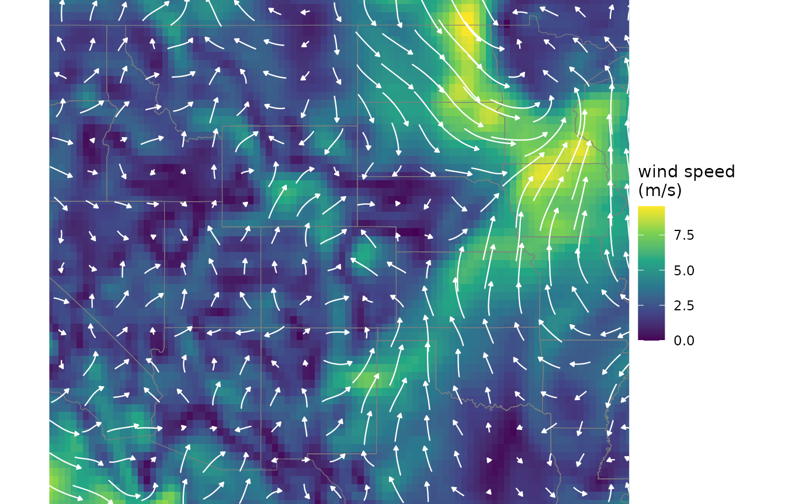
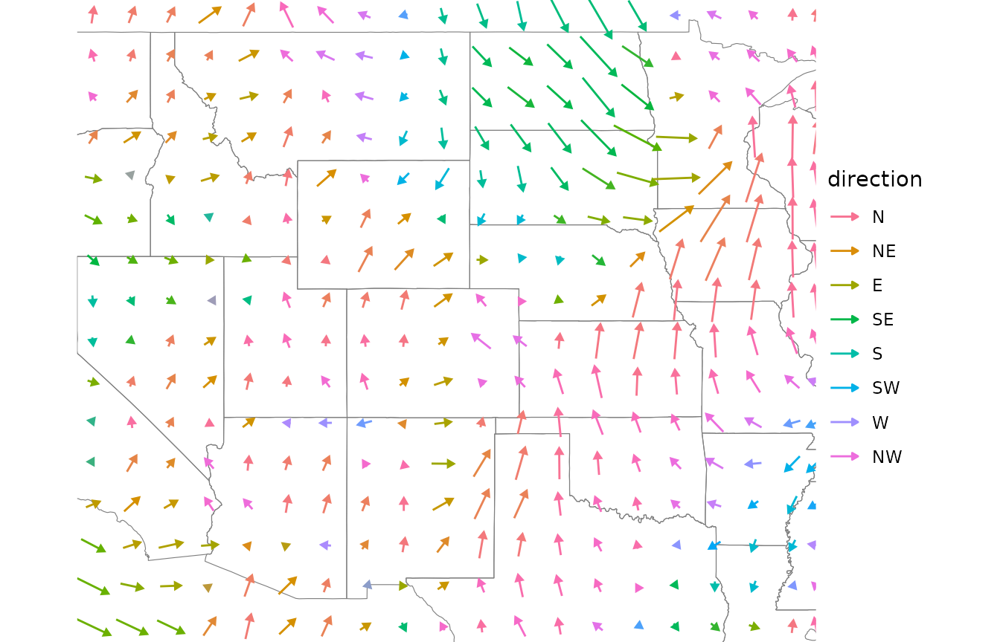
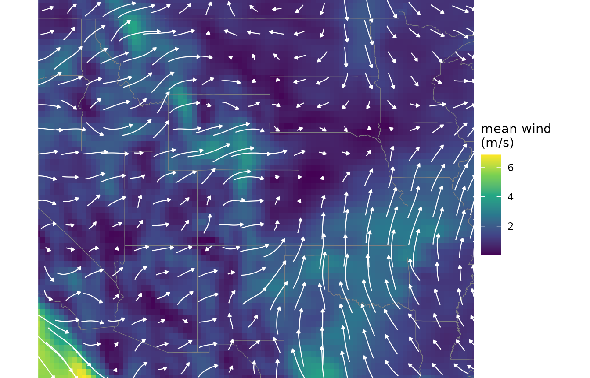
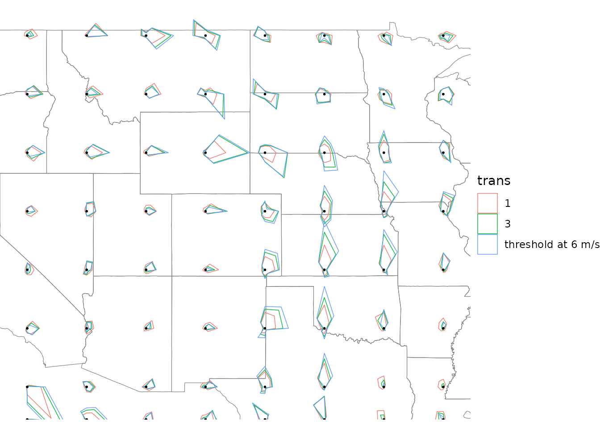
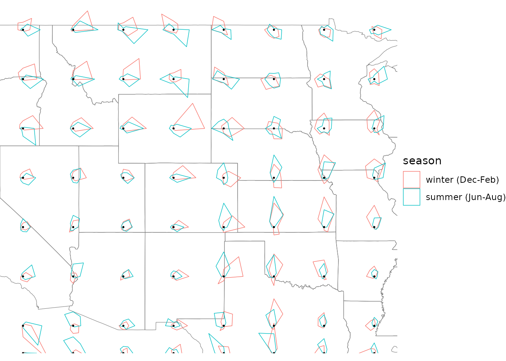
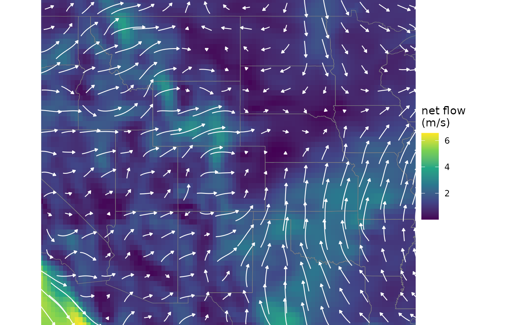

Wind data
wind-data.RmdEvery windscape analysis starts from wind data. This article covers how windscape represents wind, where to get data and how to download it, how to choose the time window for an analysis, how to bring in data from other sources, and how to build, modify, and visualize wind roses.
library(windscape)
library(ggplot2)
states <- map_data("state")
borders <- geom_path(data = states, aes(long, lat, group = group),
color = "gray50", linewidth = 0.2, inherit.aes = FALSE)
us <- coord_quickmap(xlim = c(-120, -90), ylim = c(30, 50), expand = FALSE)How windscape represents wind
windscape uses three classes of wind data, all
SpatRasters with some added structure:
- A
wind_fieldis the wind at a single moment: two layers, giving the eastward (u) and northward (v) components of the wind vector in each grid cell. - A
wind_seriesis a time series of wind fields: all the u layers, followed by all the v layers, in the same time order. - A
wind_rosesummarizes a wind series as the average conductance of wind from each cell toward each of its eight neighbors, in eight layers.
All three share some requirements. Data must be on a longitude/latitude grid with approximately square cells, because windscape computes distances and directions between neighboring cells on the earth’s surface. Wind components should be in meters per second, the units that windscape’s travel times, trail lengths, and other outputs assume.
Choosing a data source
windscape can download three gridded wind data sets, all reanalyses: models that combine weather observations with a physical model of the atmosphere to estimate past conditions everywhere, hourly.
| Data set | Years | Grid | Heights |
|---|---|---|---|
| ERA5 (ECMWF) | 1940 to present | 0.25 degrees (about 28 km) | 10 m, 100 m |
| CFSR (NCEP) | 1979-2010 | about 0.31 degrees (about 35 km) | 10 m, pressure levels |
| CFSv2 (NCEP) | 2011 to present | about 0.2 degrees (about 22 km) | 10 m, pressure levels |
ERA5 is the best default: it is a single, consistent data set with the longest record, on one grid. CFSR is mainly useful for continuity with earlier analyses that used it, including several windscape-based studies. CFSv2 is the operational continuation of CFSR, but splicing the two into one longer record takes care: they are on different grids, so one has to be resampled to match the other before building wind roses, and the change of model in 2011 can introduce a step change in wind speed or direction. For a long continuous record, ERA5 avoids both problems.
The height of the wind data should match where dispersal happens. Winds 10 m above the ground suit most near-surface dispersal, such as seeds and pollen released from vegetation. ERA5’s 100 m winds may better represent transport above forest canopies, or of propagules lofted higher in the atmosphere. CFSR’s and CFSv2’s pressure levels (1000 to 200 hPa, from near the surface to about 12 km) describe winds aloft, relevant for long-distance transport such as insect migration or spores carried high into the atmosphere.
Downloading
ncar_download() downloads data from NCAR’s Geoscience
Data Exchange, with no account needed:
files <- ncar_download("era5", level = "10m",
xlim = c(-120, -90), ylim = c(30, 50),
years = 2011:2020, months = 1:12,
time_stride = 3, dir = "~/wind_data")Data are clipped to the bounding box on the server, so only the
region you need is transferred, and each month is saved as a separate
file (see ?ncar_download for all options). A few choices
deserve thought:
- Make the box larger than your study area. Connectivity models lose particles across the edges of the domain, so results near the edges are less reliable.
-
Consider thinning in time. Winds are strongly
autocorrelated from hour to hour, so
time_stride = 3(every third hour) loses little information for building wind roses, while cutting download time and file size about threefold. -
Save to a permanent directory. Months already
downloaded to
dirare skipped, so an interrupted download resumes where it stopped, and extending an analysis to more years only downloads the new ones. The default is a temporary directory.
Downloads can be large: a decade of every-third-hour data for the box above is about 1 GB before compression, so start with a single month to check your settings.
ncar_download() returns the paths of the monthly files.
wind_series() combines them into a single
wind_series, without reading the data into memory until
needed:
series <- wind_series(files)ncar_land() downloads a land-water layer on the same
grid as the wind data, for use with weight_conductance()
(see below):
Choosing the time window
windscape’s models describe the average behavior of the wind over the time steps in a wind series, so the choice of time steps is a modeling decision. A few principles:
-
Use the native time resolution. Averaging winds
over time, for example into monthly means, cancels out winds blowing in
opposite directions, so averaged winds understate both the speed and the
variability of the wind. Use hourly data, or data thinned with
time_stride, rather than averages. - Match the record length to the process. For processes that integrate over many years, such as gene flow, use a long record, ideally a decade or more, so that the wind rose reflects typical conditions rather than the quirks of particular years. For dispersal during a particular period, a shorter record may be appropriate.
- Match the season and time of day to dispersal. If propagules are only released during part of the year, such as a flowering or fruiting season, or at certain times of day, build the wind rose from those times only.
subset_series() selects time steps by month, hour of
day, date range, or index, and wind_times() returns the
time of each step. To demonstrate, we’ll use a small example series that
ships with the package, covering the western and central US every 6
hours on the 1st and 15th of each month in 2000:
series <- windscape_example("wind_series")
range(wind_times(series))
#> [1] "2000-01-01 00:00:00 UTC" "2000-12-15 18:00:00 UTC"
summer <- subset_series(series, months = 6:8)
winter <- subset_series(series, months = c(12, 1, 2))
c(summer = summer@n_steps, winter = winter@n_steps)
#> summer winter
#> 24 24Hours are in UTC. Local solar time is about UTC plus longitude / 15 hours, so for this region, afternoon is roughly 20:00 to 01:00 UTC; for a large region, a given UTC hour falls at different local times in different places.
Pass the selected series to wind_rose() to build a rose
from those time steps; this works for long records of downloaded files
too (see below). When the selection is known in advance,
ncar_download()’s months argument also avoids
downloading data you won’t use.
Bringing your own data
Wind data from other sources, such as other reanalyses, regional
climate models, or interpolated station data, can be used too. Load the
data as a SpatRaster, check that it meets windscape’s
requirements, and convert it with wind_series():
x <- terra::rast("my_wind_data.nc")
x <- terra::rotate(x) # if longitudes run from 0 to 360, convert them to -180 to 180
x <- x / 3.6 # if winds are in km/h, convert them to m/s
series <- wind_series(x, order = "uvuv")The order argument describes how the layers are
arranged: "uuvv" (all u layers, then all v layers), or
"uvuv" (alternating). For the time-based features of
subset_series() and wind_times(), give the
layers times, either in their names (like
"u 2000-01-01 06:00:00") or with
terra::time(). Data in a projected coordinate system must
be reprojected to longitude/latitude with terra::project(),
which should be done on the u and v components with care, because
projection rotates directions as well as moving cells.
Wind fields
A single time step of a wind series is a wind field. windscape
provides ggplot2 layers for drawing them, and ggplot()
accepts wind fields directly. Here is the first time step of the example
series, with geom_wind_trail() drawing trails that follow
the airflow over a map of wind speed:
field <- wind_field(series, step = 1)
ggplot(field, aes(x, y)) +
geom_raster(aes(fill = speed)) +
borders +
geom_wind_trail(color = "white") +
scale_fill_viridis_c(name = "wind speed\n(m/s)") +
us + theme_void()
geom_wind_arrow() instead draws an arrow for the average
wind in each block of cells, here colored by wind direction with
scale_color_bearing(), a circular color scale for compass
bearings:
ggplot(field, aes(x, y)) +
borders +
geom_wind_arrow(aes(color = after_stat(bearing)), linewidth = 0.5) +
scale_color_bearing(name = "direction") +
us + theme_void()
Both layers summarize the field in blocks of cells, with lengths
proportional to wind speed by default; see their documentation for
options. wind_trails() returns trails as a data frame,
which geom_wind_path() draws, and fortify()
converts a wind field to a data frame with each cell’s u,
v, speed, and bearing, for custom
plots.
To summarize a whole series as a single field, mean()
returns its time-mean wind: the net drift of the air over the series,
which is short where winds blow from many directions, even if they are
strong. It can be plotted the same way:
ggplot(mean(series), aes(x, y)) +
geom_raster(aes(fill = speed)) +
borders +
geom_wind_trail(color = "white", hours = 24) +
scale_fill_viridis_c(name = "mean wind\n(m/s)") +
us + theme_void()
Wind roses
A wind rose summarizes a wind series into a model of the wind regime.
For each time step, wind_rose() divides the wind in each
cell between the two neighboring cells whose directions bracket the wind
direction, in proportion to how closely the wind points toward each, and
then averages over all time steps. The result is the mean conductance of
wind from each cell toward each of its eight neighbors: the rate at
which wind moves material from the cell to that neighbor.
rose <- wind_rose(series)
rose
#> class : SpatRaster
#> size : 64, 96, 8 (nrow, ncol, nlyr)
#> resolution : 0.3157895, 0.3174603 (x, y)
#> extent : -120.1579, -89.84211, 29.84127, 50.15873 (xmin, xmax, ymin, ymax)
#> coord. ref. : lon/lat WGS 84 (EPSG:4326)
#> source(s) : memory
#> names : SW, W, NW, N, NE, E, ...
#> min values : 0, 0, 0, 0, 0.00034, 0.0003, ...
#> max values : 0.115176, 0.164829, 0.205505, 0.278183, 0.195127, 0.440725, ...Choosing trans
The trans argument sets how wind speed translates into
conductance. With the default, trans = 1, conductance is
proportional to wind speed, and conductance has units of 1/hour, so that
travel times from least-cost models are in hours. Other choices model
dispersal that depends more strongly on wind speed:
-
A power greater than 1 raises wind speeds to that
power, emphasizing strong winds; for example,
trans = 3is proportional to the kinetic energy flux of the wind, which may suit propagules whose release depends on wind strength. -
A function of wind speed (in m/s) allows any other
relationship, such as a threshold below which no dispersal occurs:
trans = function(x) ifelse(x > 6, x, 0).
Units of conductance (and of travel times) are only hours-based with
trans = 1; with other choices, they are relative, which is
fine for comparing places and directions. The choice can change the wind
regime substantially, because strong winds often blow from different
directions than average winds. Here are wind roses built with each
choice, mapped with geom_wind_rose(), which draws a glyph
for each block of cells with rays pointing toward the eight neighbors,
colored by the direction of net flow:
roses <- list("1" = rose,
"3" = wind_rose(series, trans = 3),
"threshold at 6 m/s" = wind_rose(series, trans = function(x) ifelse(x > 6, x, 0)))
flows <- c("N", "NE", "E", "SE", "S", "SW", "W", "NW")
d <- do.call(rbind, lapply(names(roses), function(k){
dk <- fortify(roses[[k]])
dk[flows] <- dk[flows] / mean(dk$speed) # put the roses on a common scale
data.frame(dk, trans = k)
}))
ggplot(d, aes(x, y)) +
borders +
geom_wind_rose(aes(color = trans), fill = NA, res = 8) +
us + theme_void()
Overlaid glyphs share one scale, and the three choices give conductances in very different units, so each rose’s flows are divided by its mean before plotting. The comparison shows how the pattern of flow changes, not its overall strength: emphasizing strong winds shifts flow toward the directions of the strongest winds and makes it more directional in much of the region.
Seasonal wind roses
Building wind roses from subsets of a wind series shows how the wind regime changes through the year:
d <- rbind(data.frame(fortify(wind_rose(winter)), season = "winter (Dec-Feb)"),
data.frame(fortify(wind_rose(summer)), season = "summer (Jun-Aug)"))
d$season <- factor(d$season, levels = unique(d$season))
ggplot(d, aes(x, y)) +
borders +
geom_wind_rose(aes(color = season), fill = NA, res = 8) +
us + theme_void()
In this sample, winter brings strong southwesterly flow across the interior West. Over the southern plains, winds run north-south in both seasons, but in winter they alternate between northerly and southerly, while in summer they blow mostly from the south. With only 24 time steps per season, these roses are noisy; a real seasonal analysis would use many years of data.
Long records
A wind_series built from downloaded files keeps its data
on disk, and wind_rose() processes long series in chunks of
time steps, so the whole record never needs to be in memory at once. The
result is identical to processing all the time steps together. Selecting
time steps with subset_series() also leaves the data on
disk, so seasonal or time-of-day roses can be built from long records
the same way:
series <- wind_series(files)
rose <- wind_rose(series, trans = 1)
# afternoons during the growing season, across the whole record
rose_gs <- wind_rose(subset_series(series, months = 4:9, hours = c(20:23, 0)))combine_roses() does the same for roses built
separately, for example to add a new year of data to an existing rose.
It weights each rose by its number of time steps.
Saving and loading
A wind rose is a SpatRaster and can be saved with
terra::writeRaster(). Given a saved rose instead of a wind
series, wind_rose() loads it; supply the same
trans it was built with, and the number of time steps if
you might combine it with other roses later:
terra::writeRaster(rose, "rose.tif")
rose <- wind_rose("rose.tif", trans = 1, n_steps = 29220)Mapping wind roses
Besides geom_wind_rose(), two tools help map wind roses.
net_flow() reduces a rose to a single vector per cell, the
net direction and rate of flow, returned as a wind field that can be
drawn like any other:
ggplot(net_flow(rose), aes(x, y)) +
geom_raster(aes(fill = speed)) +
borders +
geom_wind_trail(color = "white", hours = 24) +
scale_fill_viridis_c(name = "net flow\n(m/s)") +
us + theme_void()
And fortify() converts a rose to a data frame for custom
maps. Along with the flow toward each neighbor, it gives each cell’s
total flow (speed, the mean wind speed, in km/h), net flow
(net), the direction of net flow (bearing),
and consistency, the ratio of net to total flow: near 1
where the wind blows predominantly one way, giving strongly directional
connectivity, and near 0 where it blows in all directions, spreading
material more evenly.
Modifying wind roses
Two functions modify a wind rose before modeling connectivity.
weight_conductance() multiplies conductance by a raster
of weights, reducing connectivity through some cells. For example, for
terrestrial organisms that can’t establish over water, weighting by the
land fraction from ncar_land() reduces connectivity across
lakes and oceans (though propagules can still cross them):
land <- ncar_land("era5", xlim = c(-120, -90), ylim = c(30, 50))
rose_land <- weight_conductance(rose, land)downscale() refines the grid of a wind rose by
interpolation. This matters when sites are only a few grid cells apart;
see the pairwise connectivity article.